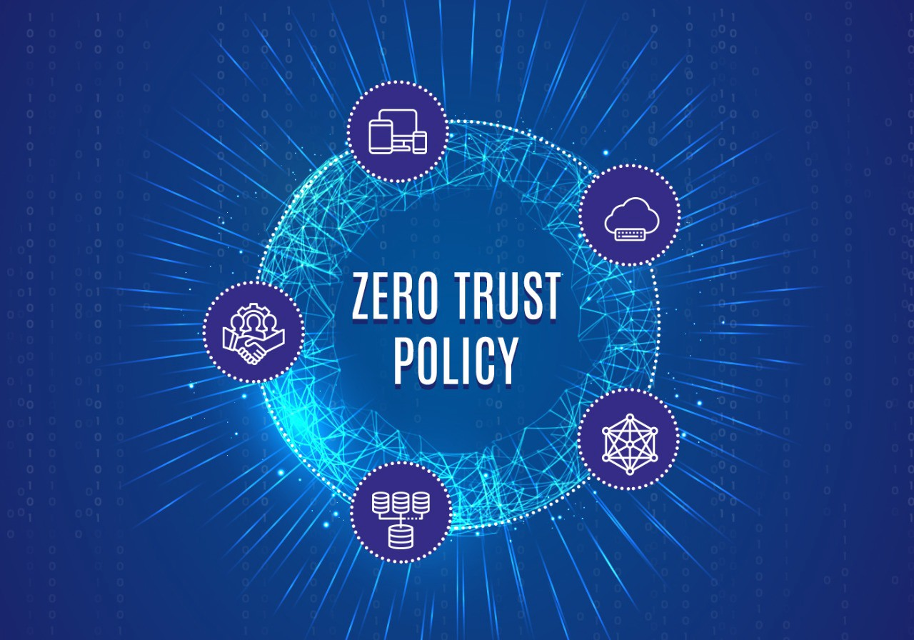
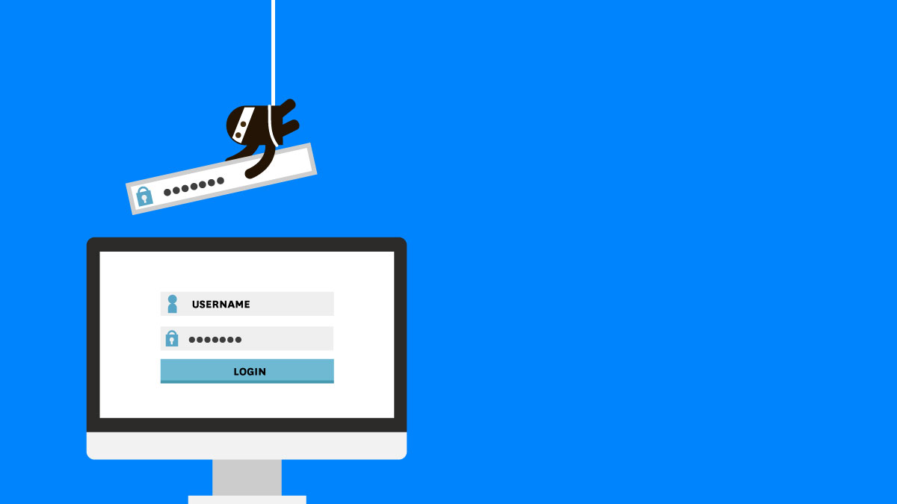

Recent Trends in Computer Security
AI Integration

As the number of connected devices increases, Internet of Things (IoT) applications become vulnerable to various forms of malicious attackers. AI development has multiple influences on cybersecurity. AI integration has become AI is the number one cybersecurity trend because it is a useful tool for ensuring data integrity by detecting threats on a large scale like prevention of zero-day attacks. AI in cybersecurity systems acts like the human immune system. Useful for identifying threats, learning from past security issues, and more. Here you can see some of their main benefits.
AI integration is also useful in the following cases:
- Providing threat intelligence.
- Analyze the risks of your data before it becomes an irreversible problem.
- Make informed decisions about critical security concerns with real-time, immediate response capabilities.
Technologies such as AI, ML, and data visualization use large amounts of information over time. Simply put, AI provides the intelligence to observe the patterns needed for new data flows and network activity.
Cloud Security Issues
As business processes, infrastructure, and data move more and more to the cloud, protecting information and critical infrastructure requires a whole new approach to enterprise security. Cloud-based threats will inevitably continue to grow as organizations struggle to maintain control over critical data and ensure real-time threat intelligence. Improperly protected or configured data buckets increase the risk of serious data breaches for large and small enterprises and can easily add rogue cloud services to end users. Organizations find that manual security management of large-scale web application infrastructures is no longer practical and are forced to rethink their approach to web application security.
Data Breaches as the Top Cyberthreat
Data breaches continue to be reported as cybersecurity one of the biggest concern, and as long as personal information remains a valuable commodity in the black market, this can continue. Ensuring data protection, especially personal data, will continue to be a top priority for businesses. This is partly due to increasingly stringent data protection laws, such as the European Union's General Data Protection Regulation (GDPR), but companies are also beginning to recognize the potential negative impact of data breaches on their images. It is. Web application bugs are one of the leading causes of data breaches, so ensuring web application security is a top priority for all organizations.
Zero Trust Security Model

Zero Trust Security is a security model that performs mandatory identity authentication for each device and individual before granting access to a private network. The overall approach of this model integrates various technologies and principles to improve security within the organization. No one inside or outside the organization trusts this model to prevent security breaches. This model also controls user access, allowing only the access needed to perform the task. Identity verification is performed whenever a user needs access to a system or device due to an evolving security threat.
Ransomware Attacks

The profile of the ransomware victim has moved upmarket since 2020. The victims are no longer the small MSP who runs IT for dentists and local law firms, but the well-monied technology firms that manage the data and web traffic for the top of the Fortune 500. Despite hiring elite IT professionals and having the resources to install top-notch security, the giants of these channels are also rocked by ransomware. Malicious ransomware infections have disrupted five of the world's top 50 solution providers since 2020 (Cognizant, CompuCom, Conduent, DXC Technology, Tyler Technologies). The five-channel giants that have been victims of ransomware since 2020 have generated total revenue of $ 42.78 billion and a total market capitalization of $ 54.36 billion.
The emergence of publicity-hungry, extortion-seeking ransomware operators, such as the group behind Maze, has unleashed an entirely different animal on the IT services industry since 2020. The ransomware group is taking a new approach that not only encrypts stolen files, but also puts the threat of private company data disclosure at the center of all its activities.